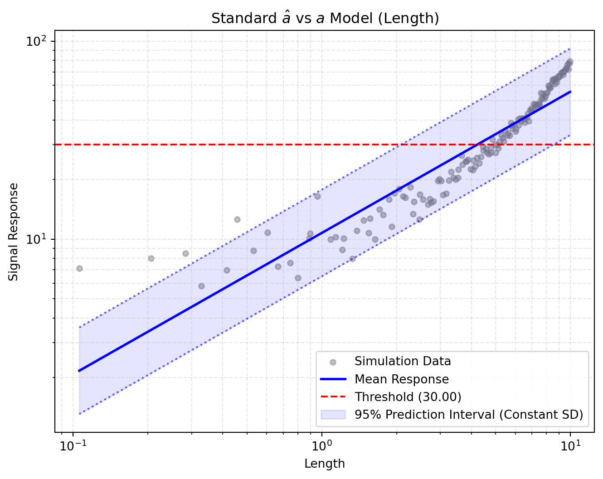
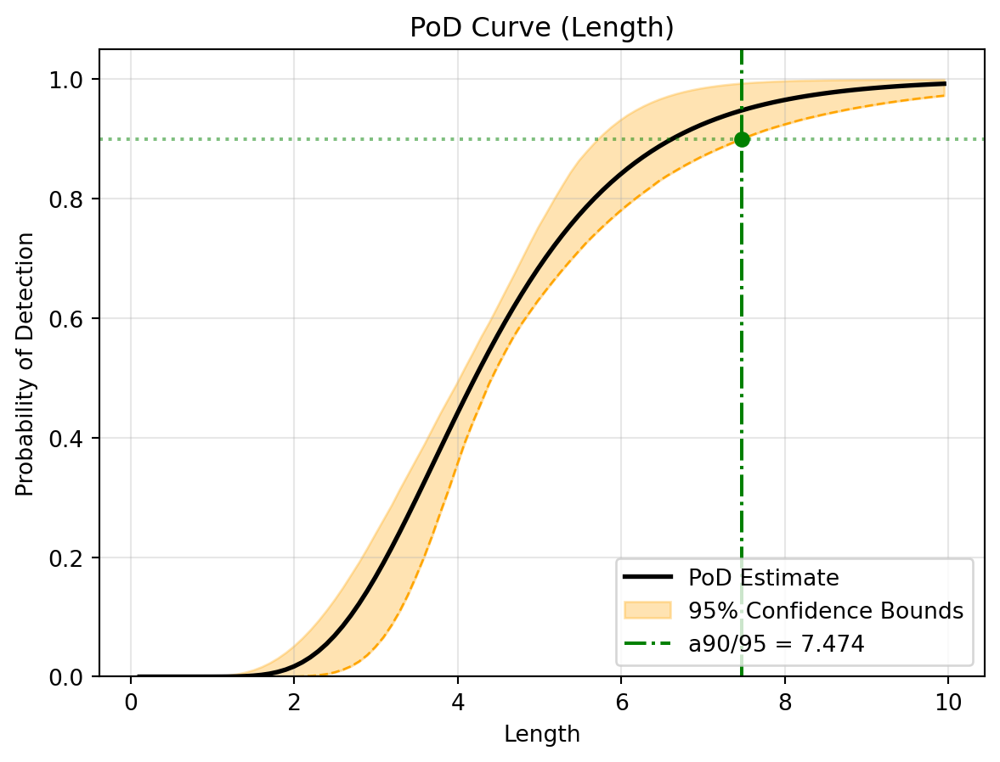
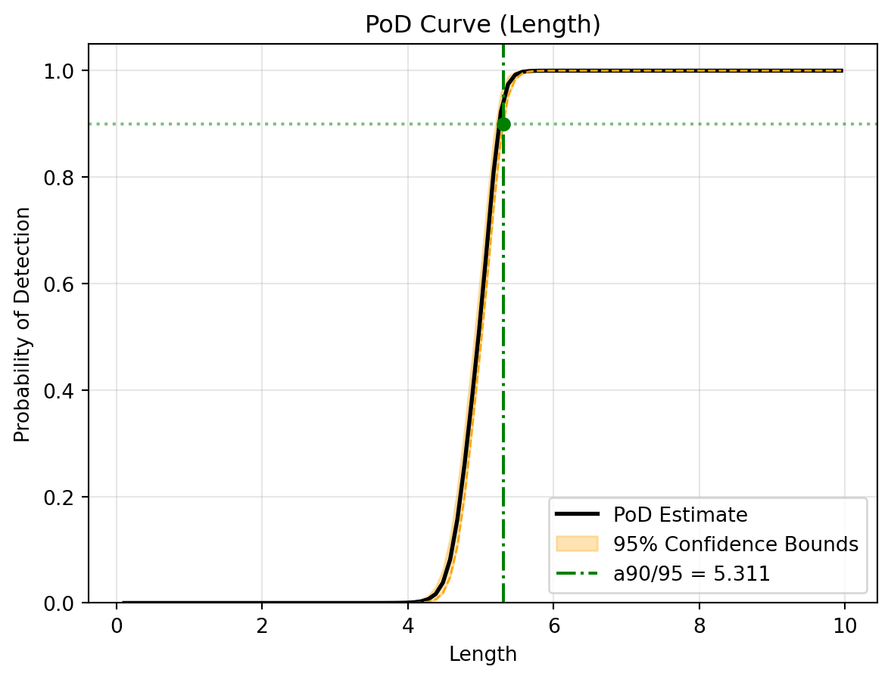
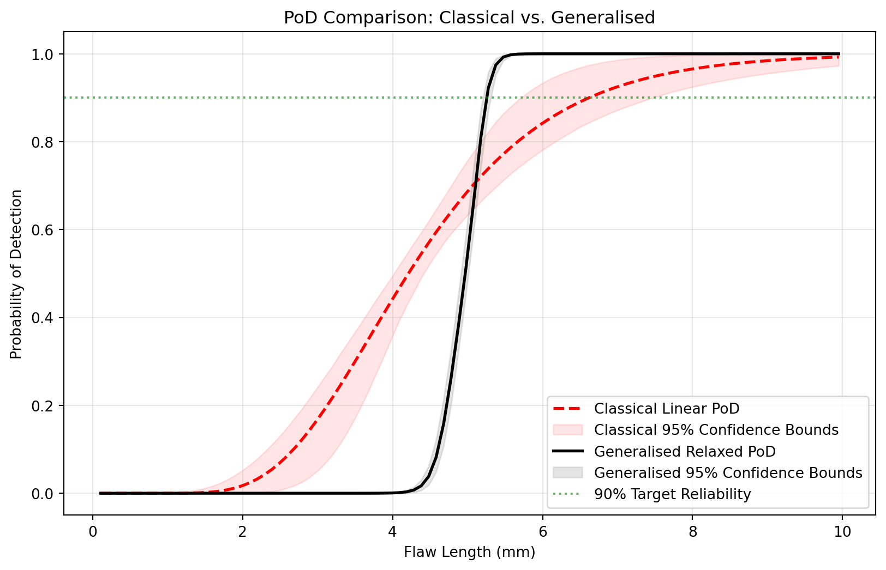

A side-by-side comparison of the linear \(\hat{a}\) versus \(a\) method and the relaxed generalised method using DigiQual.
In this tutorial, we will explore the differences between the classical linear PoD approach and the generalised active-learning approach.
The classical method assumes a strictly linear relationship and constant noise (homoskedasticity). When physical reality violates these assumptions—such as signals that curve or noise that scales with defect size—the classical method can produce misleading confidence bounds. We will generate a synthetic dataset that deliberately breaks these rules to see how both methods handle it.
1. Setup & Data Generation
First, we will simulate a physics scenario where the signal response grows quadratically and the noise increases with the flaw size.
import numpy as npimport pandas as pdimport matplotlib.pyplot as pltfrom digiqual.core import SimulationStudyfrom digiqual.sampling import generate_lhs# --- Define the Non-Linear Physics ---def apply_physics(df):"""Simulates a multidimensional signal with nuisance parameters."""# Base Signal: Quadratic trend (2*L + 0.5*L^2)# Angle Penalty: Misalignment (-0.1*Angle) reduces signal signal = (10.0+ (2.0* df["Length"])+ (0.5* df["Length"] **2)- (0.1* np.abs(df["Angle"])) )# Heteroscedastic Noise: Higher roughness = More scatter noise_scale =0.5+ (1.5* df["Roughness"]) noise = np.random.normal(loc=0, scale=noise_scale, size=len(df))return signal + noise# --- 2. Create the Dataset ---# We use Latin Hypercube Sampling to efficiently cover the 3D spacevars_df = pd.DataFrame( [ {"Name": "Length", "Min": 0.1, "Max": 10.0}, {"Name": "Angle", "Min": -45.0, "Max": 45.0}, {"Name": "Roughness", "Min": 0.0, "Max": 1.0}, ])np.random.seed(42)df = generate_lhs(ranges=vars_df, n=150) # 150 points for 3D spacedf["Signal"] = apply_physics(df)study = SimulationStudy()study.add_data(df, outcome_col="Signal")
Data initialized/overwritten. Total rows: 150
2. The Classical Approach (Linear)
We will start with the traditional \(\hat{a}\) versus \(a\) method. We will apply a logarithmic transformation to the Length axis (xlog=True) to give the linear model its best chance at fitting the curved data.
Note: Instead of using the complex analytical formulas from MIL-HDBK-1823A, we are using modern bootstrapping to evaluate the confidence bounds. This strictly maintains the classical assumptions (constant variance and normal errors) while easily calculating the 95% worst-case curve.
# Run the classical linear PoD analysislinear_results = study.linear_pod( poi_col="Length", threshold=30, xlog=True, ylog=True, n_jobs=-1, # Use all CPU cores for fast bootstrapping)# Visualise the standard signal fit and PoD curvestudy.visualise_linear(show=True)
Running validation...
Validation passed. 150 valid rows ready.
--- Starting Linear a-hat vs a Analysis (PoI: Length) ---
Running Bootstrap (1000 iterations) to establish classical confidence bounds...
-> Classical a90/95 Reliability Index: 7.474 mm
--- Linear Analysis Complete ---

(a) Linear Signal Response Model (Assuming Constant Variance)

(b) Classical PoD Curve (With Bootstrapped Confidence Bounds)
Figure 1: Classical Linear Analysis Results
Tip
Pay attention to the 95% Prediction Interval in the generated plot. Because the classical method assumes constant variance, the bounds are uniformly wide across the entire axis, completely missing the fact that smaller flaws have much tighter signal responses in our dataset!
3. The Generalised Approach (Relaxed)
Now, we will run the generalised method. This approach uses cross-validation to select the best non-linear model (Polynomial or Kriging) and automatically models the changing variance using kernel smoothing.
# Run the generalised PoD analysis# n_jobs=-1 runs the bootstrap process on all available CPU coresstudy.pod( poi_col="Length", nuisance_col=["Angle", "Roughness"], threshold=30.0, n_jobs=-1)# Visualise the relaxed signal fit and PoD curvestudy.visualise(show=True)
(b) Signal Response Model (Capturing Heteroscedastic Noise)

(c) Generalised PoD Curve (With Bootstrapped Confidence Bounds)
Figure 2: Generalised Relaxed Analysis Results
4. Custom Comparison: Head-to-Head
To truly understand the impact of these methodological differences, let’s extract the calculated PoD curves from the SimulationStudy internal state and plot them directly over one another.
# 1. Extract the evaluation grids (X) and PoD curves (Y) from the internal class stateX_linear = study.linear_pod_results["X_eval"]pod_linear = study.linear_pod_results["curves"]["pod"]ci_lower_linear = study.linear_pod_results["curves"]["ci_lower"]ci_upper_linear = study.linear_pod_results["curves"]["ci_upper"]X_relaxed = study.pod_results["X_eval"].flatten()pod_relaxed = study.pod_results["curves"]["pod"]ci_lower_relaxed = study.pod_results["curves"]["ci_lower"]ci_upper_relaxed = study.pod_results["curves"]["ci_upper"]# Set up the comparison plotfig, ax = plt.subplots(figsize=(10, 6))# 2. Plot Classical Linear Methodax.plot( X_linear, pod_linear, color="red", linestyle="--", linewidth=2, label="Classical Linear PoD",)# Shade Classical Bounds instead of plotting a single lineax.fill_between( X_linear, ci_lower_linear, ci_upper_linear, color="red", alpha=0.1, # Keep alpha low so we can see overlaps label="Classical 95% Confidence Bounds",)# 3. Plot Generalised Relaxed Methodax.plot( X_relaxed, pod_relaxed, color="black", linewidth=2, label="Generalised Relaxed PoD")# Shade Generalised Bounds between lower and upperax.fill_between( X_relaxed, ci_lower_relaxed, ci_upper_relaxed, color="gray", alpha=0.2, label="Generalised 95% Confidence Bounds",)# Formattingax.axhline(0.90, color="green", linestyle=":", alpha=0.6, label="90% Target Reliability")ax.set_ylim(-0.05, 1.05)ax.set_xlabel("Flaw Length (mm)")ax.set_ylabel("Probability of Detection")ax.set_title("PoD Comparison: Classical vs. Generalised")ax.legend(loc="lower right")ax.grid(True, alpha=0.3)plt.show()# Print a comparative summaryprint("--- Reliability Summary ---")print("Target Threshold: 15")# Find the a90 points (where the LOWER bounds cross 0.90)try: a90_linear = X_linear[np.argmax(ci_lower_linear >=0.90)] a90_relaxed = X_relaxed[np.argmax(ci_lower_relaxed >=0.90)]print(f"Classical a90/95 (Estimated): {a90_linear:.2f} mm")print(f"Generalised a90/95 (Estimated): {a90_relaxed:.2f} mm") diff =abs(a90_relaxed - a90_linear)print(f"\nDifference in critical sizing: {diff:.2f} mm")exceptIndexError:print("Curves did not reach 90% reliability.")

Figure 3: Head-to-Head Reliability Comparison
--- Reliability Summary ---
Target Threshold: 15
Classical a90/95 (Estimated): 7.56 mm
Generalised a90/95 (Estimated): 5.38 mm
Difference in critical sizing: 2.19 mm